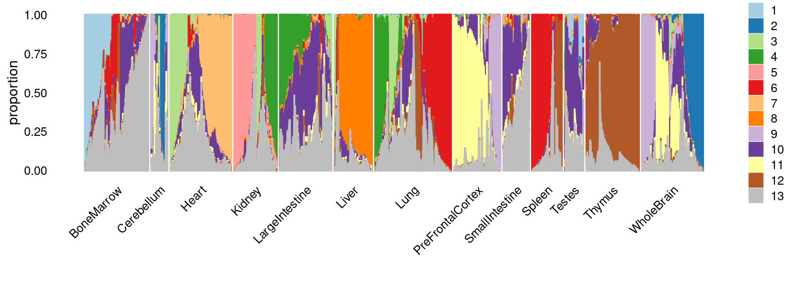
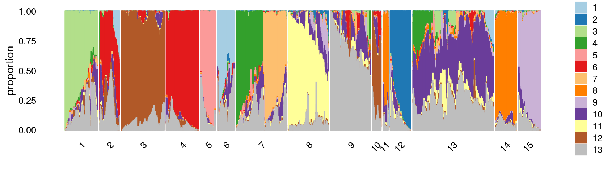
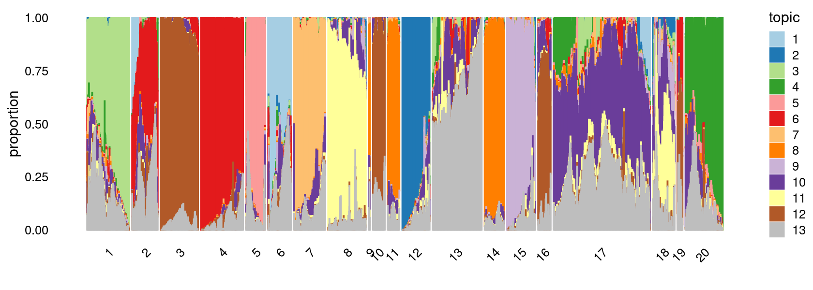
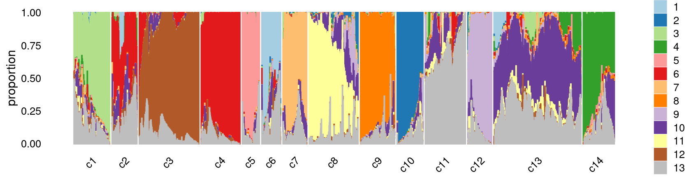

Clustering Cusanovich et al (2018) data using topic proportions with K = 13
Kaixuan Luo
Last updated: 2020-10-21
Checks: 7 0
Knit directory: scATACseq-topics/
This reproducible R Markdown analysis was created with workflowr (version 1.6.2). The Checks tab describes the reproducibility checks that were applied when the results were created. The Past versions tab lists the development history.
Great! Since the R Markdown file has been committed to the Git repository, you know the exact version of the code that produced these results.
Great job! The global environment was empty. Objects defined in the global environment can affect the analysis in your R Markdown file in unknown ways. For reproduciblity it’s best to always run the code in an empty environment.
The command set.seed(20200729) was run prior to running the code in the R Markdown file. Setting a seed ensures that any results that rely on randomness, e.g. subsampling or permutations, are reproducible.
Great job! Recording the operating system, R version, and package versions is critical for reproducibility.
Nice! There were no cached chunks for this analysis, so you can be confident that you successfully produced the results during this run.
Great job! Using relative paths to the files within your workflowr project makes it easier to run your code on other machines.
Great! You are using Git for version control. Tracking code development and connecting the code version to the results is critical for reproducibility.
The results in this page were generated with repository version 9d31a9f. See the Past versions tab to see a history of the changes made to the R Markdown and HTML files.
Note that you need to be careful to ensure that all relevant files for the analysis have been committed to Git prior to generating the results (you can use wflow_publish or wflow_git_commit). workflowr only checks the R Markdown file, but you know if there are other scripts or data files that it depends on. Below is the status of the Git repository when the results were generated:
Ignored files:
Ignored: .Rhistory
Ignored: .Rproj.user/
Untracked files:
Untracked: analysis/clusters_pca_structure_Cusanovich2018.Rmd
Unstaged changes:
Modified: analysis/assess_fits_Lareau2019_bonemarrow.Rmd
Modified: code/plots.R
Modified: scripts/fit_all_models_Lareau2019.sh
Note that any generated files, e.g. HTML, png, CSS, etc., are not included in this status report because it is ok for generated content to have uncommitted changes.
These are the previous versions of the repository in which changes were made to the R Markdown (analysis/clusters_Cusanovich2018_k13.Rmd) and HTML (docs/clusters_Cusanovich2018_k13.html) files. If you’ve configured a remote Git repository (see ?wflow_git_remote), click on the hyperlinks in the table below to view the files as they were in that past version.
| File | Version | Author | Date | Message |
|---|---|---|---|---|
| html | 9d31a9f | kevinlkx | 2020-10-21 | Build site. |
| Rmd | c00f12b | kevinlkx | 2020-10-21 | update colors and interpret clusters with tissue labels |
| html | 32ed5ae | kevinlkx | 2020-10-21 | Build site. |
| Rmd | 82292d5 | kevinlkx | 2020-10-21 | update colors and interpret clusters with tissue labels |
| html | b8a48b9 | kevinlkx | 2020-10-20 | Build site. |
| Rmd | a4daf6d | kevinlkx | 2020-10-20 | clustering with k = 13 topics |
| html | ac8ca65 | kevinlkx | 2020-10-20 | Build site. |
| Rmd | 98920ed | kevinlkx | 2020-10-20 | clustering with k = 13 topics |
| html | a38788b | kevinlkx | 2020-10-20 | Build site. |
| Rmd | f8bea96 | kevinlkx | 2020-10-20 | clustering with k = 13 topics |
Here we explore the structure in the Cusanovich et al (2018) ATAC-seq data inferred from the multinomial topic model with \(k = 13\).
Load packages and some functions used in this analysis.
library(Matrix)
library(dplyr)
library(ggplot2)
library(cowplot)
library(fastTopics)
source("code/plots.R")Load the data. The counts are no longer needed at this stage of the analysis.
data.dir <- "/project2/mstephens/kevinluo/scATACseq-topics/data/Cusanovich_2018/processed_data/"
load(file.path(data.dir, "Cusanovich_2018.RData"))
rm(counts)Plot PCs of the topic proportions
We first use PCA to explore the structure inferred from the multinomial topic model with \(k = 13\):
Load the \(k = 13\) Poisson NMF fit.
out.dir <- "/project2/mstephens/kevinluo/scATACseq-topics/output/Cusanovich_2018"
fit <- readRDS(file.path(out.dir, "/fit-Cusanovich2018-scd-ex-k=13.rds"))$fitPlot PCs of the topic proportions.
p.pca1.1 <- pca_plot(poisson2multinom(fit),pcs = 1:2,fill = "none")
p.pca1.2 <- pca_plot(poisson2multinom(fit),pcs = 3:4,fill = "none")
p.pca1.3 <- pca_plot(poisson2multinom(fit),pcs = 5:6,fill = "none")
p.pca1.4 <- pca_plot(poisson2multinom(fit),pcs = 7:8,fill = "none")
p.pca1.5 <- pca_plot(poisson2multinom(fit),pcs = 9:10,fill = "none")
p.pca1.6 <- pca_plot(poisson2multinom(fit),pcs = 11:12,fill = "none")
plot_grid(p.pca1.1,p.pca1.2,p.pca1.3,p.pca1.4,p.pca1.5,p.pca1.6)
| Version | Author | Date |
|---|---|---|
| a38788b | kevinlkx | 2020-10-20 |
Some of the structure is more evident from “hexbin” plots showing the density of the points.
breaks <- c(0,1,5,10,100,Inf)
p.pca2.1 <- pca_hexbin_plot(poisson2multinom(fit), pcs = 1:2, breaks = breaks) + guides(fill = "none")
p.pca2.2 <- pca_hexbin_plot(poisson2multinom(fit), pcs = 3:4, breaks = breaks) + guides(fill = "none")
p.pca2.3 <- pca_hexbin_plot(poisson2multinom(fit), pcs = 5:6, breaks = breaks) + guides(fill = "none")
p.pca2.4 <- pca_hexbin_plot(poisson2multinom(fit), pcs = 7:8, breaks = breaks) + guides(fill = "none")
p.pca2.5 <- pca_hexbin_plot(poisson2multinom(fit), pcs = 9:10, breaks = breaks) + guides(fill = "none")
p.pca2.6 <- pca_hexbin_plot(poisson2multinom(fit), pcs = 11:12, breaks = breaks) + guides(fill = "none")
plot_grid(p.pca2.1,p.pca2.2,p.pca2.3,p.pca2.4,p.pca2.5,p.pca2.6)
| Version | Author | Date |
|---|---|---|
| a38788b | kevinlkx | 2020-10-20 |
Layer the tissue and cell labels onto the PC plots
Next, we layer the tissue and cell labels onto the PC plots.
PCs 1 and 2:
p.pca3.1 <- labeled_pca_plot(fit,1:2,samples$tissue,font_size = 7,
legend_label = "tissue")
p.pca3.2 <- labeled_pca_plot(fit,1:2,samples$cell_label,font_size = 7,
legend_label = "cell_label")
plot_grid(p.pca3.1,p.pca3.2,rel_widths = c(8,11))
| Version | Author | Date |
|---|---|---|
| a38788b | kevinlkx | 2020-10-20 |
PCs 3 and 4:
p.pca3.3 <- labeled_pca_plot(fit,3:4,samples$tissue,font_size = 7,
legend_label = "tissue")
p.pca3.4 <- labeled_pca_plot(fit,3:4,samples$cell_label,font_size = 7,
legend_label = "cell_label")
plot_grid(p.pca3.3,p.pca3.4,rel_widths = c(8,11))
| Version | Author | Date |
|---|---|---|
| a38788b | kevinlkx | 2020-10-20 |
PCs 5 and 6:
p.pca3.5 <- labeled_pca_plot(fit,5:6,samples$tissue,font_size = 7,
legend_label = "tissue")
p.pca3.6 <- labeled_pca_plot(fit,5:6,samples$cell_label,font_size = 7,
legend_label = "cell_label")
plot_grid(p.pca3.5,p.pca3.6,rel_widths = c(8,11))
| Version | Author | Date |
|---|---|---|
| a38788b | kevinlkx | 2020-10-20 |
PCs 7 and 8:
p.pca3.7 <- labeled_pca_plot(fit,7:8,samples$tissue,font_size = 7,
legend_label = "tissue")
p.pca3.8 <- labeled_pca_plot(fit,7:8,samples$cell_label,font_size = 7,
legend_label = "cell_label")
plot_grid(p.pca3.7,p.pca3.8,rel_widths = c(8,11))
| Version | Author | Date |
|---|---|---|
| a38788b | kevinlkx | 2020-10-20 |
PCs 9 and 10:
p.pca3.9 <- labeled_pca_plot(fit,9:10,samples$tissue,font_size = 7,
legend_label = "tissue")
p.pca3.10 <- labeled_pca_plot(fit,9:10,samples$cell_label,font_size = 7,
legend_label = "cell_label")
plot_grid(p.pca3.9,p.pca3.10,rel_widths = c(8,11))
| Version | Author | Date |
|---|---|---|
| a38788b | kevinlkx | 2020-10-20 |
PCs 11 and 12:
p.pca3.11 <- labeled_pca_plot(fit,11:12,samples$tissue,font_size = 7,
legend_label = "tissue")
p.pca3.12 <- labeled_pca_plot(fit,11:12,samples$cell_label,font_size = 7,
legend_label = "cell_label")
plot_grid(p.pca3.11,p.pca3.12,rel_widths = c(8,11))
| Version | Author | Date |
|---|---|---|
| a38788b | kevinlkx | 2020-10-20 |
Visualize by structure plot grouped by tissues
set.seed(10)
colors_topics <- c("#a6cee3","#1f78b4","#b2df8a","#33a02c","#fb9a99","#e31a1c",
"#fdbf6f","#ff7f00","#cab2d6","#6a3d9a","#ffff99","#b15928",
"gray")
rows <- sample(nrow(fit$L),4000)
samples$tissue <- as.factor(samples$tissue)
p.structure.1 <- structure_plot(select(poisson2multinom(fit),loadings = rows),
grouping = samples[rows, "tissue"],n = Inf,gap = 20,
perplexity = 50,topics = 1:13,colors = colors_topics,
num_threads = 4,verbose = FALSE)
# Perplexity automatically changed to 35 because original setting of 50 was too large for the number of samples (111)
# Perplexity automatically changed to 41 because original setting of 50 was too large for the number of samples (128)
print(p.structure.1)
| Version | Author | Date |
|---|---|---|
| 32ed5ae | kevinlkx | 2020-10-21 |
k-means clustering on topic proportions
Define clusters using k-means, and then create structure plot based on the clusters from k-means.
Define clusters using k-means with \(k = 14\):
set.seed(10)
clusters.14 <- factor(kmeans(poisson2multinom(fit)$L,centers = 14)$cluster)
print(sort(table(clusters.14),decreasing = TRUE))
# clusters.14
# 13 7 3 2 4 1 12 10 8 14 5 6 11
# 18096 10936 9331 7693 6077 5817 4184 3994 3627 3306 2964 2821 2073
# 9
# 254Structure plot based on k-means clusters
colors_topics <- c("#a6cee3","#1f78b4","#b2df8a","#33a02c","#fb9a99","#e31a1c",
"#fdbf6f","#ff7f00","#cab2d6","#6a3d9a","#ffff99","#b15928",
"gray")
rows <- sample(nrow(fit$L),4000)
p.structure.2 <- structure_plot(select(poisson2multinom(fit),loadings = rows),
grouping = clusters.14[rows],n = Inf,gap = 20,
perplexity = 50,topics = 1:13,colors = colors_topics,
num_threads = 4,verbose = FALSE)
# Perplexity automatically changed to 42 because original setting of 50 was too large for the number of samples (131)
# Perplexity automatically changed to 1 because original setting of 50 was too large for the number of samples (7)
# Perplexity automatically changed to 26 because original setting of 50 was too large for the number of samples (82)
# Perplexity automatically changed to 44 because original setting of 50 was too large for the number of samples (137)
print(p.structure.2)
Define clusters using k-means with \(k = 15\):
set.seed(10)
clusters.15 <- factor(kmeans(poisson2multinom(fit)$L,centers = 15)$cluster)
print(sort(table(clusters.15),decreasing = TRUE))
# clusters.15
# 13 7 3 9 8 4 1 14 12 2 15 5 6
# 14936 8426 8043 6796 6757 5951 5784 4314 4168 3657 3649 2960 2738
# 10 11
# 1697 1297Structure plot based on k-means clusters
colors_topics <- c("#a6cee3","#1f78b4","#b2df8a","#33a02c","#fb9a99","#e31a1c",
"#fdbf6f","#ff7f00","#cab2d6","#6a3d9a","#ffff99","#b15928",
"gray")
rows <- sample(nrow(fit$L),4000)
p.structure.3 <- structure_plot(select(poisson2multinom(fit),loadings = rows),
grouping = clusters.15[rows],n = Inf,gap = 20,
perplexity = 50,topics = 1:13,colors = colors_topics,
num_threads = 4,verbose = FALSE)
# Perplexity automatically changed to 42 because original setting of 50 was too large for the number of samples (131)
# Perplexity automatically changed to 48 because original setting of 50 was too large for the number of samples (149)
# Perplexity automatically changed to 23 because original setting of 50 was too large for the number of samples (75)
# Perplexity automatically changed to 13 because original setting of 50 was too large for the number of samples (44)
print(p.structure.3)
Define clusters using k-means with \(k = 20\):
set.seed(10)
clusters.20 <- factor(kmeans(poisson2multinom(fit)$L,centers = 20)$cluster)
print(sort(table(clusters.20),decreasing = TRUE))
# clusters.20
# 17 13 4 1 3 20 8 12 7 2 15 14 18
# 13635 6703 5963 5809 5557 5057 5045 4012 3783 3492 3490 3147 2989
# 5 6 11 16 10 19 9
# 2958 2738 2158 1839 1756 721 321Structure plot based on k-means clusters
colors_topics <- c("#a6cee3","#1f78b4","#b2df8a","#33a02c","#fb9a99","#e31a1c",
"#fdbf6f","#ff7f00","#cab2d6","#6a3d9a","#ffff99","#b15928",
"gray")
rows <- sample(nrow(fit$L),4000)
p.structure.4 <- structure_plot(select(poisson2multinom(fit),loadings = rows),
grouping = clusters.20[rows],n = Inf,gap = 20,
perplexity = 50,topics = 1:13,colors = colors_topics,
num_threads = 4,verbose = FALSE)
# Perplexity automatically changed to 43 because original setting of 50 was too large for the number of samples (133)
# Perplexity automatically changed to 1 because original setting of 50 was too large for the number of samples (9)
# Perplexity automatically changed to 26 because original setting of 50 was too large for the number of samples (82)
# Perplexity automatically changed to 25 because original setting of 50 was too large for the number of samples (81)
# Perplexity automatically changed to 43 because original setting of 50 was too large for the number of samples (134)
# Perplexity automatically changed to 27 because original setting of 50 was too large for the number of samples (86)
# Perplexity automatically changed to 48 because original setting of 50 was too large for the number of samples (150)
# Perplexity automatically changed to 10 because original setting of 50 was too large for the number of samples (35)
print(p.structure.4)
Refine clusters
We then further refine the clusters based on k-means result with \(k = 20\): merge “orange” clusters 9, 11, 14; merge “brown” clusters 3 and 10, 16, 19; merge “yellow” clusters 8 and 18. (maybe could also merge the “red” clusters 2 and 4)
clusters.merged <- clusters.20
clusters.merged[clusters.20 %in% c(9,11,14)] <- 9
clusters.merged[clusters.20 %in% c(3,10,16,19)] <- 3
clusters.merged[clusters.20 %in% c(8,18)] <- 8
clusters.merged <- factor(clusters.merged, labels = paste0("c", c(1:length(unique(clusters.merged)))))
print(sort(table(clusters.merged),decreasing = TRUE))
samples$cluster_kmeans <- clusters.merged
# clusters.merged
# c13 c3 c8 c11 c4 c1 c9 c14 c10 c7 c2 c12 c5
# 13635 9873 8034 6703 5963 5809 5626 5057 4012 3783 3492 3490 2958
# c6
# 2738colors_topics <- c("#a6cee3","#1f78b4","#b2df8a","#33a02c","#fb9a99","#e31a1c",
"#fdbf6f","#ff7f00","#cab2d6","#6a3d9a","#ffff99","#b15928",
"gray")
rows <- sample(nrow(fit$L),4000)
p.structure.5 <- structure_plot(select(poisson2multinom(fit),loadings = rows),
grouping = clusters.merged[rows],n = Inf,gap = 20,
perplexity = 50,topics = 1:13,colors = colors_topics,
num_threads = 4,verbose = FALSE)
# Perplexity automatically changed to 43 because original setting of 50 was too large for the number of samples (134)
# Perplexity automatically changed to 47 because original setting of 50 was too large for the number of samples (147)
print(p.structure.5)
The clusters defined by k-means on topic proportions reasonably identify the clusters shown in the PCA hexbin plots (below).
p.pca.4.1 <- labeled_pca_plot(fit,1:2,samples$cluster_kmeans,font_size = 7,
legend_label = "cluster_kmeans")
p.pca.4.2 <- labeled_pca_plot(fit,3:4,samples$cluster_kmeans,font_size = 7,
legend_label = "cluster_kmeans")
p.pca.4.3 <- labeled_pca_plot(fit,5:6,samples$cluster_kmeans,font_size = 7,
legend_label = "cluster_kmeans")
p.pca.4.4 <- labeled_pca_plot(fit,7:8,samples$cluster_kmeans,font_size = 7,
legend_label = "cluster_kmeans")
p.pca.4.5 <- labeled_pca_plot(fit,9:10,samples$cluster_kmeans,font_size = 7,
legend_label = "cluster_kmeans")
p.pca.4.6 <- labeled_pca_plot(fit,11:12,samples$cluster_kmeans,font_size = 7,
legend_label = "cluster_kmeans")
plot_grid(p.pca.4.1,p.pca.4.2,p.pca.4.3,p.pca.4.4,p.pca.4.5,p.pca.4.6)
plot_grid(p.pca2.1,p.pca2.2,p.pca2.3,p.pca2.4,p.pca2.5,p.pca2.6)
We then label the cells in each cluster with the known tissue labels.
Tissues:
samples$tissue <- as.factor(samples$tissue)
cat(length(levels(samples$tissue)), "tissues. \n")
table(samples$tissue)
# 13 tissues.
#
# BoneMarrow Cerebellum Heart Kidney
# 8403 2278 7650 6431
# LargeIntestine Liver Lung PreFrontalCortex
# 7086 6167 9996 5959
# SmallIntestine Spleen Testes Thymus
# 4077 4020 2723 7617
# WholeBrain
# 8766Plot the distribution of tissues by cluster.
Stacked barplot for the counts of tissues by clusters:
library(plyr);library(dplyr)
# ------------------------------------------------------------------------------
# You have loaded plyr after dplyr - this is likely to cause problems.
# If you need functions from both plyr and dplyr, please load plyr first, then dplyr:
# library(plyr); library(dplyr)
# ------------------------------------------------------------------------------
#
# Attaching package: 'plyr'
# The following objects are masked from 'package:dplyr':
#
# arrange, count, desc, failwith, id, mutate, rename, summarise,
# summarize
library(RColorBrewer)
freq_cluster_tissue <- count(samples, vars=c("cluster_kmeans","tissue"))
colors_tissues <- colorRampPalette(brewer.pal(9, "Set1"))(13)
# stacked barplot for the counts of tissues by clusters
p.structure.6 <- ggplot(freq_cluster_tissue, aes(fill=tissue, y=freq, x=cluster_kmeans)) +
geom_bar(position="stack", stat="identity") +
theme_classic() + xlab("Cluster") + ylab("Number of cells") +
scale_fill_manual(values = colors_tissues) +
guides(fill=guide_legend(ncol=2)) +
theme(
legend.title = element_text(size = 10),
legend.text = element_text(size = 8)
)
print(p.structure.6)
Percent stacked barplot for the counts of tissues by clusters:
freq_cluster_tissue <- count(samples, vars=c("cluster_kmeans","tissue"))
colors_tissues <- colorRampPalette(brewer.pal(9, "Set1"))(13)
p.structure.7 <- ggplot(freq_cluster_tissue, aes(fill=tissue, y=freq, x=cluster_kmeans)) +
geom_bar(position="fill", stat="identity") +
theme_classic() + xlab("Cluster") + ylab("Proportion of cells") +
scale_fill_manual(values = colors_tissues) +
guides(fill=guide_legend(ncol=2)) +
theme(
legend.title = element_text(size = 10),
legend.text = element_text(size = 8)
)
print(p.structure.7)
We can see a few clusters are tissue specific: cluster c5 is kidney specific; cluster c7 is heart specific; cluster c9 is liver specific; cluster c3 is primarily thymus; cluster c6 is primarily bone marrow.
Some clusters are combinations of related tissues: cluster c4 is half lung and half spleen; cluster c8 and c12 are mainly from pre-frontal cortex, whole brain (and cerebellum) – all neuron related. cluster c10 is also from whole brain and cerebellum. cluster c14 is mainly from Kidney, LargeIntestine, and Lung.
Some clusters are more heterogeneous mixtures of different tissues: e.g. c1, c2, c11, c13.
freq_cluster_tissue <- with(samples,table(tissue,cluster_kmeans))
print(freq_cluster_tissue)
# cluster_kmeans
# tissue c1 c2 c3 c4 c5 c6 c7 c8 c9 c10 c11 c12
# BoneMarrow 33 1342 174 259 0 2453 0 1 0 0 3085 0
# Cerebellum 80 8 0 29 0 0 0 387 0 1140 47 510
# Heart 2084 128 15 64 5 0 3776 14 0 0 442 4
# Kidney 1047 45 27 48 2953 0 0 4 3 0 347 1
# LargeIntestine 328 107 109 70 0 0 1 32 0 0 310 5
# Liver 334 96 41 36 0 0 0 0 5577 1 47 0
# Lung 1468 1143 1017 2647 0 2 5 28 28 2 552 2
# PreFrontalCortex 97 84 1 127 0 0 0 4453 0 2 39 1115
# SmallIntestine 112 71 49 9 0 0 0 3 15 0 1601 0
# Spleen 8 302 1033 2498 0 43 0 0 0 0 114 0
# Testes 34 1 0 2 0 240 0 30 3 0 43 0
# Thymus 6 56 7406 88 0 0 1 0 0 0 25 0
# WholeBrain 178 109 1 86 0 0 0 3082 0 2867 51 1853
# cluster_kmeans
# tissue c13 c14
# BoneMarrow 1056 0
# Cerebellum 73 4
# Heart 1113 5
# Kidney 158 1798
# LargeIntestine 4617 1507
# Liver 31 4
# Lung 1378 1724
# PreFrontalCortex 38 3
# SmallIntestine 2212 5
# Spleen 22 0
# Testes 2367 3
# Thymus 31 4
# WholeBrain 539 0
sessionInfo()
# R version 3.5.1 (2018-07-02)
# Platform: x86_64-pc-linux-gnu (64-bit)
# Running under: Scientific Linux 7.4 (Nitrogen)
#
# Matrix products: default
# BLAS/LAPACK: /software/openblas-0.2.19-el7-x86_64/lib/libopenblas_haswellp-r0.2.19.so
#
# locale:
# [1] LC_CTYPE=en_US.UTF-8 LC_NUMERIC=C
# [3] LC_TIME=en_US.UTF-8 LC_COLLATE=en_US.UTF-8
# [5] LC_MONETARY=en_US.UTF-8 LC_MESSAGES=en_US.UTF-8
# [7] LC_PAPER=en_US.UTF-8 LC_NAME=C
# [9] LC_ADDRESS=C LC_TELEPHONE=C
# [11] LC_MEASUREMENT=en_US.UTF-8 LC_IDENTIFICATION=C
#
# attached base packages:
# [1] stats graphics grDevices utils datasets methods base
#
# other attached packages:
# [1] RColorBrewer_1.1-2 plyr_1.8.6 fastTopics_0.3-180 cowplot_1.0.0
# [5] ggplot2_3.3.0 dplyr_0.8.5 Matrix_1.2-15 workflowr_1.6.2
#
# loaded via a namespace (and not attached):
# [1] ggrepel_0.8.2 Rcpp_1.0.4.6 lattice_0.20-38 tidyr_0.8.3
# [5] prettyunits_1.1.1 assertthat_0.2.1 rprojroot_1.3-2 digest_0.6.25
# [9] R6_2.4.1 backports_1.1.7 MatrixModels_0.4-1 evaluate_0.14
# [13] coda_0.19-2 httr_1.4.1 pillar_1.4.4 rlang_0.4.6
# [17] progress_1.2.2 lazyeval_0.2.2 data.table_1.12.8 irlba_2.3.3
# [21] SparseM_1.77 whisker_0.4 hexbin_1.28.1 rmarkdown_2.1
# [25] labeling_0.3 Rtsne_0.15 stringr_1.4.0 htmlwidgets_1.5.1
# [29] munsell_0.5.0 compiler_3.5.1 httpuv_1.5.3.1 xfun_0.14
# [33] pkgconfig_2.0.3 mcmc_0.9-7 htmltools_0.4.0 tidyselect_0.2.5
# [37] tibble_3.0.1 quadprog_1.5-5 viridisLite_0.3.0 crayon_1.3.4
# [41] withr_2.1.2 later_1.0.0 MASS_7.3-51.6 grid_3.5.1
# [45] jsonlite_1.6 gtable_0.3.0 lifecycle_0.2.0 git2r_0.27.1
# [49] magrittr_1.5 scales_1.1.1 RcppParallel_4.4.3 stringi_1.4.6
# [53] farver_2.0.3 fs_1.3.1 promises_1.1.0 ellipsis_0.3.1
# [57] vctrs_0.3.0 tools_3.5.1 glue_1.4.1 purrr_0.3.4
# [61] hms_0.4.2 yaml_2.2.0 colorspace_1.4-1 plotly_4.8.0
# [65] knitr_1.28 quantreg_5.36 MCMCpack_1.4-4